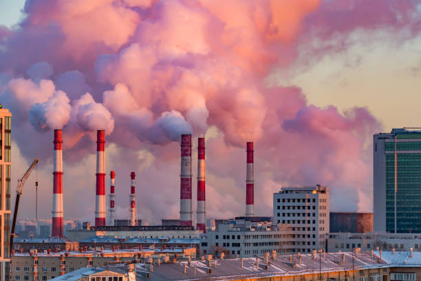
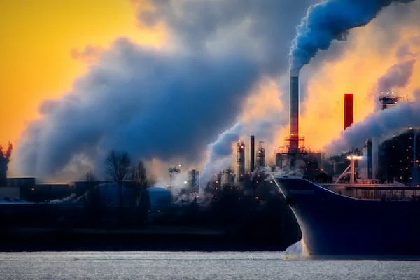

As usinas termoelétricas são uma das principais fontes de energia utilizadas no mundo. Elas funcionam por meio da queima de combustíveis fósseis, como carvão, óleo diesel e derivados de petróleo, para aquecer a água e produzir vapor. Esse vapor, por sua vez, aciona as turbinas que geram eletricidade.
Apesar de parecer uma forma eficiente de gerar energia, a queima de combustíveis fósseis em usinas termoelétricas gera poluição atmosférica e emissões de gases de efeito estufa, contribuindo para o aquecimento global e as mudanças climáticas. Além disso, a extração e o transporte desses combustíveis também geram impactos ambientais significativos.
As usinas termoelétricas também podem gerar impactos locais na qualidade do ar, do solo e da água, além de causar problemas de saúde para as comunidades próximas. A disposição dos resíduos da queima do carvão, por exemplo, pode contaminar as águas subterrâneas e superficiais com metais pesados e outros poluentes.
Portanto, é importante avaliar cuidadosamente os impactos ambientais e sociais das usinas termoelétricase buscar alternativas mais sustentáveis para a geração de energia, como a energia solar, eólica, ou nuclear